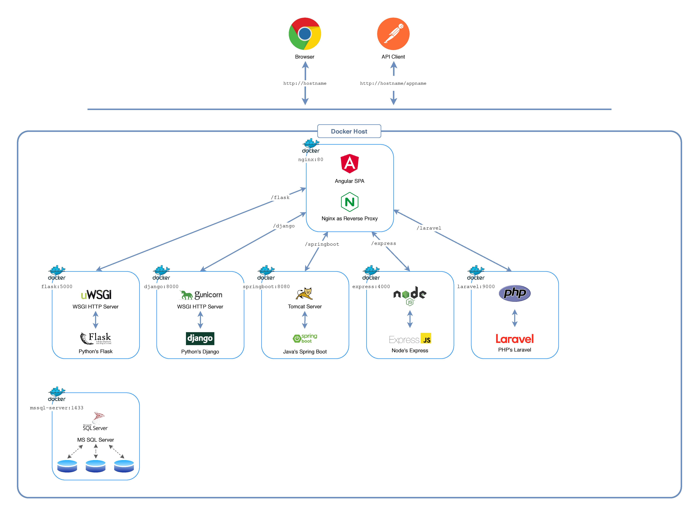

<div class="container">
  <mat-card>
    <mat-card-title>Planetary Demo Project</mat-card-title>
    <mat-card-subtitle>Simple Microservices build in popular Web Frameworks.</mat-card-subtitle>
    <mat-card-content>
      <p>It is comprised of</p>
      <ul>
        <li>a NGINX reverse proxy server</li>
        <li>an Angular SPA running behind NGINX</li>
        <li>Microservices written in Django, Flask, Spring Boot, Express and Laravel</li>
        <li>MS SQL Server databases for each Microservice</li>
      </ul>
      
    </mat-card-content>
  </mat-card>
</div>
